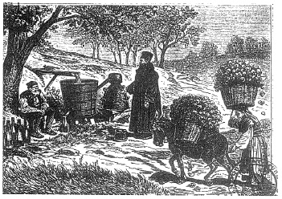

ŞEKİL 93. Bulgaristan’da gülyağı üretimi: Bu basit düzenekte, odun yakılarak ısıtılan damıtma kabından çıkan damıtma ürünleri, damıtma başlığının tepesinden çıkıp aşağıya uzanan iletim borusu ile içi soğutma suyu dolu olan bir fıçının içinden boylu boyunca geçmekte ve ürün, aşağıdan şişelere toplanmaktadır (ahşap oyma resim, ~1880).141
Bitkilerden uçucu çözücülerle özütleme yoluyla parfüm eldesinde ilk cesur adım 1894’te Grasse’da atılmıştır. Bu yöntemde bütan ve petrol eteri gibi hidrokarbon çözücüler kullanılmaktadır ve soğukta çalışma avantajı vardır. İşlem sırasında bitkiden kimi ince yağlar ve boyarmaddeler de çekilmektedir ve çözücü geri kazanımı, işlem sonrası uygulanan damıtma ile gerçekleşmektedir. Çözücünün uçurulmasıyla geriye kalan merhem ya da mum benzeri, kimi zaman sert bir kitle halindeki ürüne, konkret (Fra. “l’essence concrète” ya da kısaca “concrète”, İng. “concrete”, Alm. “Konkret”) adı verilir. Mumundan ayırmak için alkolle muamele edilirse “mutlak esans” ya da “saf çiçek yağı” (“l’essence absolue”) ele geçer. En ince “absolue”ler (absolü) “parfait” ya da “prima” (“mükemmel”) diye nitelenir ve en yüksek fiyat biçilir. Konkret yöntemiyle ele geçen ürün verimleri şöyledir:150
|
1000 adet bergamut kabuğundan 1000 adet limon kabuğundan 1000 adet tatlı portakal kabuğundan 1000 adet acı portakal kabuğundan 1000 adet mandalina kabuğundan 1000 kg acı portakal çiçeğinden 720 kg yasemin çiçeğinden 700 kg gül yaprağından |
1 kg yağ 600 g yağ 600 g yağ 400 g yağ 300 g yağ 1 kg neroli yağı 1 kg yasemin yağı 1 kg gülyağı, elde edilir. |
1 kg yasemin 8-10 bin adet çiçek anlamına gelir ve sap ve yaprakları olmaksızın bu kadar sayıda çiçeğin elle toplanmasını gerektirir. Becerikli bir çiçek toplayıcı kadın, saatte 4-5 bin çiçek toplayabilir. Bu doğal koku maddesinin pahalılığı, bu sayıların büyüklüğünden kestirilebilir. Ağırlıkça yüzde ya da binde birkaçlık kokulu esans damlaları elde etmek için çok geniş çayırlarda bitki ve çiçek yetiştirilmesi gerektiğinden zahmetli bir uğraştır.150
Grasse’da günümüzde 20 bin insan bitkilerle, onların korunması ve hasadı ile uğraşmakta ve yılda 3700 ton çiçek ve bitki yetiştirmektedir. Ancak oradaki parfüm üreticiler bununla yetinmemekte, diğer bitkisel ve hayvansal parfüm hammaddelerini de dışalımla sağlamaktadır. Bu bağlamda paçuli yaprakları Sumatra’dan, süsen kökleri Toskana’dan, meşe yosunu eski Yugoslav ülkelerinden ve Macaristan’dan, sandal ağacı odunu Hindistan’dan, tarçın kabukları Seylan’dan, kuru karanfil Madagaskar’dan, reçine ve balsam Peru ve Türkiye’den, hayvansal koku eczaları Çin, Etiyopya ve Kanada’dan getirilmektedir. 19. yüzyıl sonlarına doğru Grasse’lı girişimciler Fransa’nın denizaşırı sömürgelerinde koku bitkilerini kültüre almış ve oralarda parfüm işleme merkezleri kurmuşlardır. Böylece örneğin Madagaskar’daki birkaç adada yetişen kananga ağacından elde edilen Ylang-Ylang yağı, ilk kez 1870 yılı dolayındaki bir parfüm fuarında esans olarak sunulmuştur. Grasse’lı firmalar ayrıca Kuzey Afrika’da acı portakal, geranium, yasemin, ökaliptus gibi aromatik bitkiler yetiştirmek üzere büyük plantasyonlar kurmuştur. Daha sonra bağımsızlıklarına kavuşan Tunus, Fas, Cezayir gibi bu ülkeler, bu tür etkinlikleri sürdürmekte ve kendi damıtma tesislerinde ürettikleri esansları pazarlamaktadırlar. Grasse yöresi ilk başlarda yasemin esansını İtalya’dan sağlarken, daha sonraları İtalya bu ürününü bizzat kendisi dünyaya pazarlamıştır. Günümüzde dünya yasemin kokusu gereksiniminin yaklaşık yarısını karşılayan İtalya, dünyada bergamut yağının da ana üreticisidir.150
Bilimin gelişmesiyle kimyacılar güzel koku veren bileşikleri çözümlemeye başlamışlardır. Uçucu (eterik, esansiyel) yağların çoğunun, tek bir aromatik bileşenden oluştuğu bulunmuş ve buna ilişkin hidrokarbonlara terpen’ler denmiştir. Çiçekler parfümlere kadınsı bir özellik katarken, hayvanlardan elde edilen misk gibi kokular, derinlik vermektedir. Hayvansal kokular, aslında insanın koku alma duyusunu rahatsız edecek kadar güçlüdür, ama öteki kokularla karıştırılınca yumuşak ve kalıcı hale dönüşürler.
Parmümeri sanatının gizi, “Müziğe çok benzer biçimde parfüm de koku notalarından bestelenir” sözleriyle özetlenebilir. Bu bağlamda parfümün de müzikte olduğu gibi tonu, titreşimi, armonisi vardır. Parfüm konusunda Almanlar “Eau de Cologne” ile, İngilizler lavanta kokusu ile ün kazanırken Fransızlar çok sayıda ünlü ve pahalı parfüm türlerine sahip olmuşlardır. Soylu parfüm hazırlama sanatçılarına Fransa’da “les grands nez” (“büyük burun” / “uzun burun”) adı verilmektedir. Bunlara kimi zaman “tavşan burun” da denmekte olup burnunu durmadan kıpırdatıp duran tavşanın, yüz milyon koku alma sinirine sahip olduğu saptanmıştır. Bunlar arasında Catherine de’ Medici’nin birlikte Fransa’ya götürdüğü René le Florentin, aynı dönemde Roma’daki ünlü parfümcü Signora Maddalena, 18. yüzyıl Londra’sında Charles Lillys, 19. yüzyıl Fransa’sında ise Jean-François Houbigant (18./19. yüzyıl) ile tüm “büyük burun”ların en ustası olan Pierre-François Pascal Guerlain, ilk göze çarpan adlardır. Usta Guerlain’in emrinde çalışan en ünlü koku yaratıcısı ise Jacques Guerlain idi. XVI. Louis döneminde 1774’te Piver ile 1775’te genç yaştaki Houbigant adlı parfüm tüccarları Paris’te parfüm dükkânı açarak parfüm ve eldiven ticaretine başladılar ve sarayla da yakın ilişkiler kurdular. Kraliçe Marie-Antoinette, yumuşak kokulu menekşe ve çiçek parfümlerini yeğliyordu.150 1830-1870 arasında parfüm, epeyce gözden düştü. Temizlik losyonu ve kolonya dışındaki kokulara ahlâken izin verilmiyordu. Parfüme yolunu tekrar açan, Fransa İmparatoriçesi Eugènie (1826-1920) oldu. Bu sonradan görme imparatoriçe, parfümcü Pierre-François Pascal Guerlain’i sarayın resmî parfümcüsü yaptı ve o da 1861 yılında imparatoriçeye, onuruna ürettiği “Eau de Cologne Impériale” ile teşekkür etti.12 Bunun ardından üretilen diğer ünlü iki parfüm ise, Jean-François Houbigant tarafından geliştirilen “Fougère Royale” (“Krallık Eğreltiotu”) (1882) ile François Coty (1874-1934) tarafından geliştirilen “Jicky” (1889) idi. Bunlardan ilki, bileşiminde ilk kez sentetik bir bileşen bulunduruyordu ve bu madde, 1868’de keşfedilmiş olan kumarin idi. Kumarin günümüzde daha çok ilaç etken maddesi olarak kullanılmaktadır.178
Bulgaristan’dan sağlanan nitelikli gülyağının bir damlası mendile döküldüğünde haftalar boyu ve birkaç kez yıkandıktan sonra bile güzel koku vermeyi sürdürüyordu. Aslı “sıçan kulağı” anlamına Farsça “merzengûş” olan ve Arapça’ya “merzencûs” şeklinde geçen mercanköşk (Fra. “origan”, Alm. “Majoran”), yalnızca bir et baharatı olmayıp Fransızlar ondan aynı zamanda “L’Origan” adlı sevilen bir koku da üretmişlerdi. Fransız parfüm reklamlarında “kulak arkasına üç damla”nın yeterli olduğu konusu işleniyordu.150
Fransa’da Mouson Parfümevi tarafından “Mikado”, Piver Parfümevi tarafından “Trèfle Incarnat”, Spötter tarafından “Dul Parfümü”, Paul Poiret tarafından “Parfum de Rosine”, Jacques Guerlain tarafından “L’Heure Bleue” (1913), “Mitsouko” (1919) ve “Shalimar” (1925), Houbigant tarafından “Quelques Fleurs” (1912) ve “Chantilly”, François Coty tarafından “Chypre” (1917), “Emeraude” ve “Muguet”, Caron tarafından “Muguet du Bonheur” adlı parfümler geliştirildi. Revillon, Piver, Houbigant, Lubin (Pierre François Lubin, “Eau Vivifante”, 1798), Millot, Jacques Guerlain, François Coty, Caron ve Molinard gibi eski ünlü büyük parfüm firmalarının adlarının yanında daha sonraları Chanel (“Chanel No 5”, “Captain Molyneux”, “Le Numéro Cinq”, “Quinta Essentia”), Lanvin (“Arpège”), Madame Schiaparelli (“Shocking”, “Snuff”), Jean Patou (“Joy”), Robert Piguet (“Bandit”), Marcel Rochas (“Femme”, “Madame Rochas”), Carven (“Ma Griffe”, “Chasse Gardée”), Christian Dior (“Diorissimo”), Le Galion (“Whip”), Grès (“Cabochard”), Guy Laroche (“Fidjy”), Molyneux (“Fête”) ve Nina Ricci (“Mademoiselle Ricci”) de yer aldı.150
Uluslararası tanınmış parfümeri bilgini ve Die psychologischen Grundlagen der Parfumerie (Parfümerinin Psikolojik Temelleri) (Berlin, 1930) adlı kitabın yazarı Paul Jellinek’in (20. yüzyıl) erojen beden kokularına ilişkin ilginç görüşüne göre ter kokusu, kızıl ve siyah saçlı kadınlara günlük kokusunu, sarı saçlı kadınlara ise mür kokusunu anımsatmaktadır.
Sarmısak son derece şifalı bir yiyecek olsa da sarmısak yemiş bir insanın teni üzerine sürülecek en pahalı bir parfüm bile etkili olmaz ve sarmısak kokusu parfüm kokusunu berbat eder! Benzer şeyler sigara / nikotin konusunda da söylenebilir. Parfümcüler, çok sigara içenlerin, kullanacakları parfümün seçimine özel özen göstermeleri gerektiğini belirtmektedirler.
19. yüzyıl başlarına dek, şeker ve alkol gibi, canlıların hücrelerinden yapılan karbonlu kimyasal maddelerin laboratuvarlarda cansız maddelerden hazırlanamayacağına inanılmıştır. Organik bileşiklerin yalnız canlı organizmalarda bulunan yaşam enerjisinin etkisiyle olduğu kabul ediliyordu. Bu kuramdan ilk sapma, 1828’de Friedrich Wöhler’in (1800-1882) organik bir bileşik olan üreyi, anorganik bir madde olan amonyum siyanattan elde etmesiyle oldu. Ancak amonyum siyanatın yapıldığı amonyak da canlı maddelerden üretilmiş olduğundan, yaşam enerjisine inananların bir kısmı düşüncelerindeki ısrarlarını sürdürdüler. 1845’de Hermann Kolbé (1818-1884), beklenen mucizeyi gerçekleştirdi. Kaynağı organik olmayan karbon, hidrojen ve oksijen elementlerinden asetik asiti (sirke asiti) sentezledi. Böylece Kolbé canlı hücrelerde oluşan işlemi deney tüplerinde yaparak “yaşam enerjisi” kuramını çürüttü. Bundan sonra yapılan sürekli ve düzenli çalışmalarla organik kimya gelişti ve bu arada parfüm bileşeni olabilecek kimyasal maddeler de birbiri ardı sıra sentezlendi.
Nitrobenzen (Alm. “Mirbanöl”), kokulu sabun yapımında kullanılmış ve acıbadem yağının (benzaldehid) sahtesi olarak “mirbane yağı” adıyla ticarette kullanılmıştır. Güzel kokulu maddeleri sentezleme çabaları çerçevesinde kumarin, 1868’de William Henry Perkin (1838-1907) tarafından sentezlenmiştir. 1888’de kimyacı A. Baur, belirli nitrobenzen türevlerinin misk benzeri kokuya sahip olduğunu keşfetmiştir. Berlin Üniversitesi’nden Prof. Ferdinand Johann Carl Wilhelm Tiemann (1848-1899), ömrünü aromatik maddeleri incelemeye adamıştır. En önemli buluşlarından biri, menekşenin koku maddesini (“ionone”) sentezlemesidir. Organik kimyadaki saflaştırma ve molekül yapısı belirleme yöntemlerindeki ilerlemeler, doğal parfümlerin gizlerinin çoğunu açığa kavuşturmuş, bunun ardından pek çok doğal güzel koku, sentez yoluyla daha ucuza elde edilebilmiştir.8
Güzel kokular, yüzde 75-90 oranında alkolün yanı sıra uçucu yağlar da içeren bir karışımdır. Gece kokusu olarak kullanılan parfüm ya da “Extrait”de uçucu yağ oranı yüzde 22’nin üstünde, parfümün yarı kuvvetindeki türü olan, öğle sonrası ya da gece kokusu olarak kullanılan ve “eau de senteur” de denen “eau de parfüm”de yüzde 8-15, daha hafif olan ve gündüzleri kullanılan “eau de toilette”te ise yüzde 5-8 arasında değişmektedir. Bu kokuların en hafifi ve en ucuzu olan ve günün her saatinde kullanılabilen “eau de cologne”da (kolonya) uçucu yağ oranı, yüzde 5’in altındadır. Yavaş etki eden ve geniş vücut yüzeyine sürülerek kullanılan losyon ya da krem türü vücut parfümü yüzde 3 esans içerir. Çiçek mumuna parfüm emdirilerek hazırlanan katı parfümler ise kulak memelerine, boyun kısmına ve kollara sürülerek kullanılır. Kokunun özünü, deriden buharlaşıp havaya yayılan yağ oranı oluşturur. Günümüzde bir parfümün yaklaşık yüzde 85’ini kimyasal ürünler oluşturmaktadır.150, 183
Doğal maddeler içindeki koku bileşenlerinin özütlenmesi kimi zaman çok pahalıya mal oluyordu. 19. yüzyıl ortalarında sentez kimyasının becerisiyle ilk sentetik koku maddeleri, parfümeri sanayisine girmeye başlamıştır. Bunlar arasında vanilin (ilk sentezi 1876), heliotropin (ilk sentezi 1869), kumarin (ilk sentezi 1868) ve nitrobenzen (“mirbane yağı”) vardı. Sentetik kokuların fiyatları da daha düşüktü. Örneğin 1890 yılında 1 kg doğal vanilya esansı (vanilin) 3500 Alman Markı iken, 1 kg sentetik vanilin 3000 Mark idi ve 1908 yılında sentetik vanilinin 1 kg’ı 30 Mark’a düşmüştür. Benzer şekilde 1 kg doğal yasemin özünün maliyeti 30 bin Mark iken, sentetik karşılığı olan benzil asetat, yalnızca 10 Mark’a mal oluyordu. Sentetik koku maddelerinin parfümlerde kullanımına geçiş, nispeten hızlı olmuştur. Sentetik eşdeğerler olarak misk’in (“tonquinol”), menekşe kokusunun (“ionone”), çiçek açmış yonca kokusunun (“isoamylsalicylat”), bergamut yağının (“linalylacetat”) ve neroli’nin (antranilik asit metil esteri) sentetik şekilleri üretilmiştir. Doğal koku maddelerinin kimyasal yapılarının açıklanmasına getirdiği katkılar nedeniyle Leopold Ruzicka (1887-1976), kimya dalında Nobel ödülü kazanmış ve 20. yüzyılın ilk yarısında beş Nobel ödülü, aroma kimyası üzerine yapılan çalışmalara verilmiştir.164
1920’de, günümüzde hâlâ sentetik kokuların klasiği olmayı sürdüren “Chanel No 5” piyasaya çıkmıştır. Zenginlerin terzisi, ünlü modacı ve parfümcü “Coco” lakaplı Adrienne Chanel (1883-1971), bir Rus göçmeni olan Ernest Beaux’dan 24 saat kullanılabilecek bir parfüm istemişti ve Beaux, 10 şişeden oluşan örnekleri 1’den 5’e ve 20’den 24’e kadar numaralamıştı. Bunlardan 5 nolu şişede bulunan örnek, yüzyılımızın en çok tanınan kokusu olarak belirlendi. Coco Chanel’in bu konudaki ünlü sözü, “Parfüm, kadının vazgeçilmez aksesuarıdır” şeklindeydi. 1921’de ortaya çıkan “Chanel No 5”in şişesi 1959’dan bu yana New York Modern Sanatlar Müzesi’nde sergilenmektedir. Aynı yıllarda yatakta ne giydiğini soran bir gazeteciye ünlü sinema yıldızı Marilyn Monreo (1926-1962), “Geceleri üstümde hiçbir şey olmaz, birkaç damla Chanel No 5 dışında” diyordu.12 Beaux, 1929 yılında “Soir de Paris” adlı parfümü piyasaya sürmüştür.
Dudaklara sürülen rujun içeriğinde çeşitli türlerde mumlar, yağlar, pigmentler ve yumuşatıcılar bulunmaktadır. Kullanılan mumlar arasında balmumu, “carnauba” mumu (Brezilya’daki mum palmiyelerinin yapraklarının gözeneklerinden sızan maddeden elde edilir) ve “candelilla” mumu (içerisinde sülfürik asit bulunan kaynar suyun içine “candelilla” bitkisinin daldırılması sonucu suyun yüzeyinde toplanan mumdan elde edilir) da bulunmaktadır. Ruj yapımında kullanılan sıvı ve katı yağlar arasında zeytinyağı, mineral yağ, hintyağı, kakao yağı, lanolin ve vazelin bulunmaktadır.
Günümüzde hâlâ tüm parfüm maddelerinin dörtte biri Akdeniz, Güneydoğu Asya ve Latin Amerika’da sistemli olarak yetiştirilen 150 kadar koku bitkisinden kazanılmakta ve dörtte üçü kimyasal sentez yoluyla (ham petrolden yola çıkarak) elde edilmektedir. Ayrıca hayvansal kökenli temel koku maddeleri de, günümüzde parfümeri sanayisinde çeşitli bileşimler halinde değerlendirilmektedir.164
York kentinde 1984 yılında açılan Jorvik Müzesi, Ortaçağ’da kullanılan kokuların imalini, ziyaretçilerin gözleri önünde yeniden sergilemektedir.
Çeşitli formül ve adlar altında piyasaya sunulan güze koku türlerinin parfüm ve alkol içerikleri ÇİZELGE 6‘da verilmektedir:178